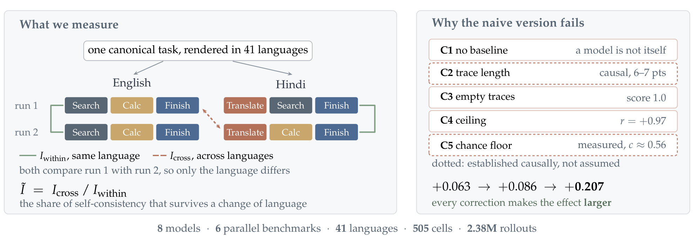
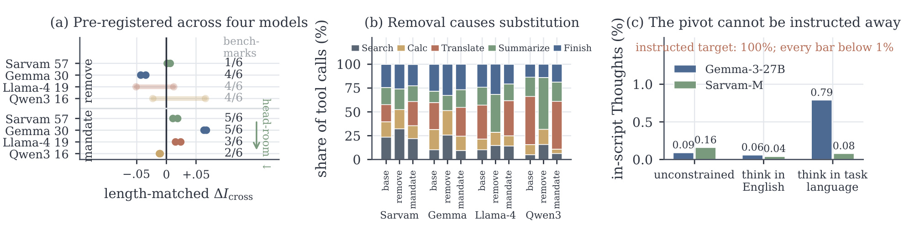
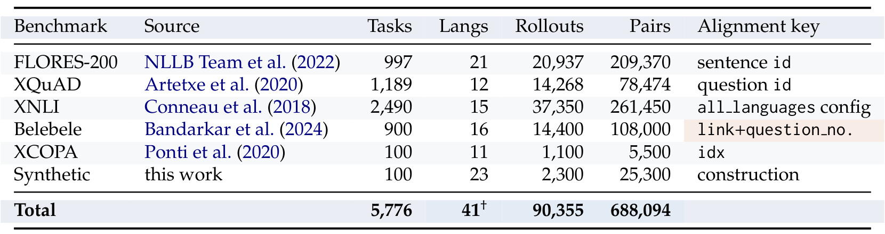
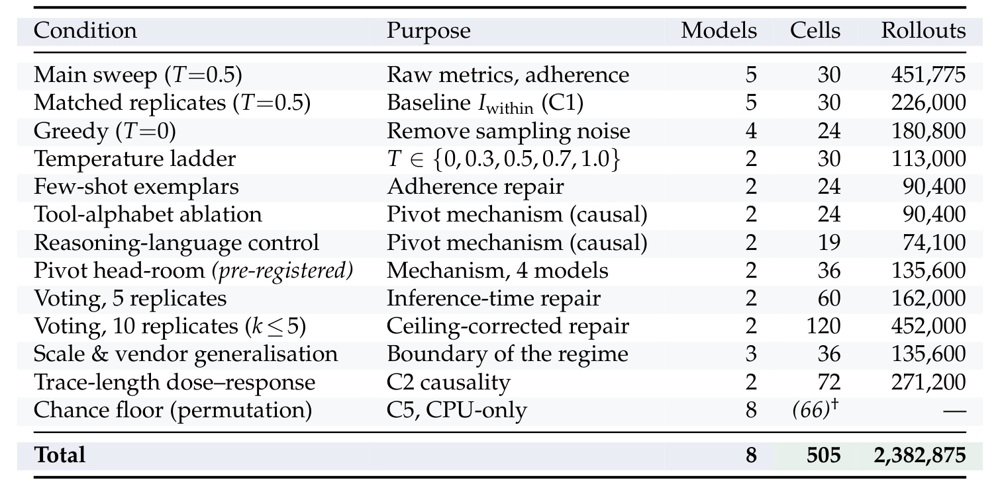
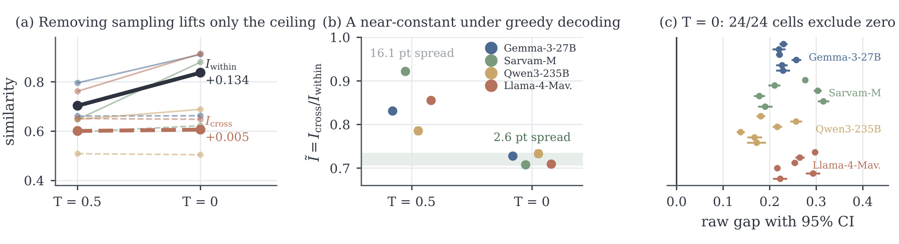
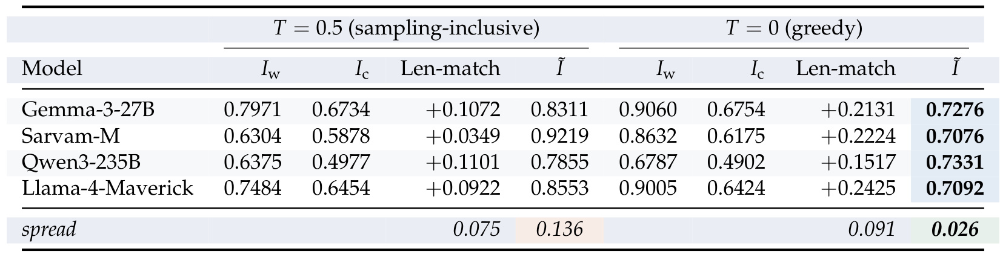
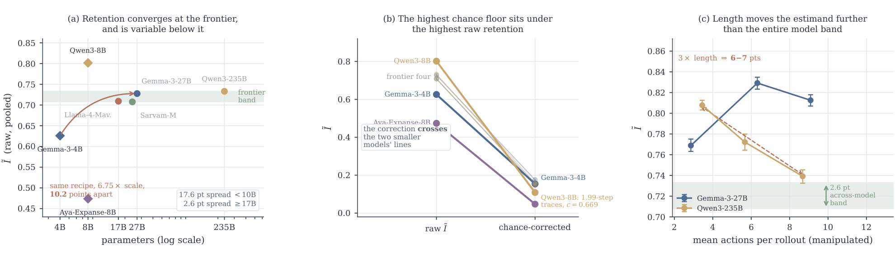
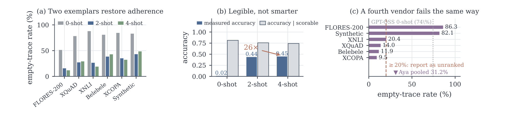
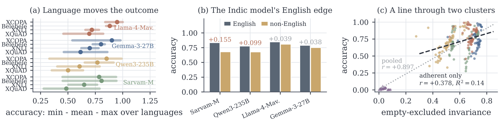

Actions Speak Louder than Words：工具型智能体的跨语言策略保留精读
这篇论文由 Microsoft Research India 的 Sourabrata Mukherjee、Kalika Bali 与 Sunayana Sitaram 完成，已被 COLM 2026 接收。论文入口为 arXiv:2608.11110。作者把多语言 Agent 评测的对象从“最后答得对不对”推进到“中间到底采取了哪些行动”：同一道任务换成另一种语言后，模型是否仍按相近顺序调用 Translate、Search、Calc、Summarize 与 Finish？官方 GitHub 仓库本轮已核验到，但仓库内容为空，因此目前只能依据论文核对方法和结果，不能把代码、数据与复现实验视为已经可完整获得。
多语言评测通常只比较最终答案，并丢弃工具调用的中间行动；但对 Agent 来说，行动路径决定成本、时延、失败方式与可审计性，因此两种语言即使给出相同答案，也可能执行了不同且风险不等价的策略。
1. 背景和问题
传统跨语言基准大多把模型看成输入到输出的函数：把语义相同的问题翻成多种语言，再比较分类标签、抽取答案或自由文本是否一致。工具型 Agent 却多了一层不可忽略的产品行为。它可能先翻译、再检索、后计算，也可能直接检索或把文本总结后作答；这些路径即便收敛到同一个最终答案，花费的 token、调用的外部服务、暴露给工具的数据、等待时间与可能触发的异常都不同。若英语路径经过安全审核而印地语路径多了一次翻译调用，那么“答案一致”并不能证明两条路径受到同一套治理规则约束。论文因此把 action policy 定义为任务到工具调用轨迹的映射，并把跨语言保留的对象设为这条轨迹，而不是最终文本。
这个问题比“比较两条工具序列”难得多。首先，跨语言样本必须真的是同一个 canonical task。许多多语言语料只有英语与某一语言之间的双语对应，并没有各非英语语言之间的逐项对齐；另一些语料按语言分别存储且行顺序不同。论文筛选后保留 FLORES-200、XQuAD、XNLI、Belebele、XCOPA 与一个自建合成基准，用稳定的 sentence id、question id、idx 或重新构造的键保证同一行确实指向同一任务。Belebele 若直接按行号 join，只能匹配 51% 的项目，说明一条不报错的数据管道也完全可能计算出没有语义的“跨语言一致性”。
其次，模型本身不是确定的参照物。即使提示、语言、任务与解码配置都不变，仅改变 serving seed，两次生成的工具轨迹也不会完全一致。论文测得同语言一致性会随模型和温度落在相当宽的范围内；如果只观察一条英语轨迹和一条非英语轨迹，就无法判断差异来自语言，还是来自模型自身的随机性与服务非确定性。换言之，单次跨语言比较只有一个观测量，却混合了至少两个来源，语言效应在统计上不可识别。这也是作者认为“没有同语言基线”比普通指标偏差更严重的原因：它不是数值略偏，而是没有合适的参照点。
再次，行动序列的相似度没有天然的零点。工具字母表只有五个符号，轨迹通常又很短；两个回答完全不同任务的轨迹也很容易共同出现 Translate 或 Finish。更极端的是，两条空轨迹或两条仅包含 Finish 的退化轨迹会得到很高乃至完美的相似度，却没有体现有效的 Agent 行为。短轨迹比长轨迹更容易碰撞，模型自身可复现性又限制了跨语言相似度的上限，于是原始指标会同时奖励短、空、确定但未必真正跨语言一致的模型。
这里还存在一个常被忽略的治理错位。答案级评测适合判断用户是否拿到正确结果，却无法回答路径是否满足同一份政策：某种语言下新增的 Translate 可能把敏感文本交给不同服务，额外的 Search 可能扩大外部数据暴露，重复 Calc 或 Summarize 又会改变费用和超时分布。监控系统若只以最终 accuracy 告警，就会把这些变化视为等价成功；安全团队若只在英语轨迹上编写允许工具、调用顺序和升级规则，也无法确认规则迁移到其他语言。因此 policy retention 不是要求所有语言机械地执行同一路径，而是先把差异显式量化，再判断哪些差异合理、哪些差异会破坏成本预算或安全假设。
论文真正回答的不是“哪个模型分数最高”，而是三个层层收紧的问题：第一，在把同语言自不一致、长度、空轨迹、可复现性上界与随机碰撞地板都纳入后，语言变化是否仍会稳定改变工具策略；第二，如果效应存在，它在模型规模、采样温度和任务基准之间如何分解；第三，模型为什么会在换语言时改变路线，英语是否承担了非英语输入到行动规划之间的中间枢纽。这个研究视角对生产 Agent 很重要，因为它把跨语言质量从一个答案层面的平均分，改造成可连接成本审计、工具权限、故障隔离与回归测试的行为指标。
2. 方法
2.1 从行动轨迹到可识别的跨语言比较
对 canonical task $z$，论文用 $x^{(\ell)}(z)$ 表示它在语言 $\ell$ 中的实现。模型在固定工具集合 $\mathcal{T}=\{\text{Search, Calc, Translate, Summarize, Finish}\}$ 下输出行动序列 $A^{(\ell)}(z)$。工具调用只被解析和比较，并不会真的执行，也没有工具返回值重新进入状态，因此这里测的是受控 scaffold 诱导出的工具使用策略，而不是带真实环境反馈的 grounded agent。轨迹相似度使用归一化匹配块指标：
符号解释：$A$ 与 $B$ 是两条工具调用序列，$|A|$、$|B|$ 是各自长度，$M$ 是最长连续匹配块分解中所有匹配块长度之和。它对称、相同序列得 1、无共享工具得 0，但在五符号且轨迹短的条件下，“不同任务”并不等于得 0，这正是后续 chance floor 的来源。朴素的跨语言量可以写成：
符号解释：期望同时覆盖任务 $z$ 和不同语言对 $(\ell_i,\ell_j)$。问题是它没有告诉我们模型在同一种语言里能复现自己到什么程度。为此每个 cell 都生成两次，$r_1,r_2$ 只在 serving seed 上不同，解码参数、任务、语言与 token budget 保持相同：
符号解释：$I_{\text{within}}$ 比较同一语言的两次独立生成，表示模型自身的策略可复现性；$I_{\text{cross}}$ 同样跨 seed，却额外改变语言。两边都承担相同的生成噪声，因此语言是唯一系统性差异。原始缺口为
符号解释：$\Delta$ 表示换语言造成的绝对相似度短缺，但它会被 $I_{\text{within}}$ 这个上限限制。核心归一化量则是
符号解释：$\widetilde{I}$ 不是正确率，也不是“动作有 71% 相同”，而是模型在同语言下能够复现的策略一致性中，有多少比例在改变语言后仍被保留。论文没有训练新模型；这里所有步骤都是推理时受控生成与离线估计，双 replicate 是识别条件，不是训练目标。

Figure 1 左侧把同一任务的英语与印地语实现放进同一个符号工具脚手架，每种语言各跑两次。同语言两条轨迹估计 $I_{\text{within}}$，跨语言且跨 seed 的轨迹估计 $I_{\text{cross}}$，两者相除得到保留率。图中印地语路线先 Translate，而英语路线直接 Search，正好展示“答案可能相同、行动路线不同”。右侧不是装饰性问题列表，而是整个估计器的约束清单：无基线会把自不一致算成语言差异；长度、空轨迹与 chance floor 会抬高相似度；ceiling 又让绝对 gap 更像确定性排名。底部从约 $+0.063$ 到 $+0.086$ 再到 $+0.207$ 的变化说明，修正没有把效应“消掉”，反而逐步暴露了原先被压低的语言结构差异。
2.2 五类测量混淆与修正顺序
第一类混淆 C1 是缺少同语言基线。作者不假定同一模型会复现自己，而是对每个 cell 做匹配 replicate。直接复用已有单次结果还会引入 token budget 不同，导致轨迹被不同程度截短；在本文数据上，未匹配预算的长度校正 gap 为 $+0.0625$，匹配后变成 $+0.0878$，低估约 38%。因此 C1 在生成阶段解决，而不是靠事后回归“控制”掉。第二类 C2 是轨迹长度。相同编辑率下，短序列更容易获得高相似度。论文把 pair 按 $\max(|A|,|B|)$ 分箱，将比较双方重加权到共同长度分布，而且 A 到 B、B 到 A 两个方向都做；只有两种重加权方向结论同号才接受。长度不是纯粹的 nuisance：三档提示干预把实际平均动作数拉开近三倍，直接推动 $\widetilde I$ 变化 6–7 个百分点，所以论文只能在长度匹配后讨论干预效应，不能假定比值已经自动消除了长度。
第三类 C3 是空轨迹与协议不遵从。两条空输出在序列指标上完全相同，却不含任何可审计行动。作者规定只要 pair 任一侧为空就丢弃，并把 empty-trace rate 与 parse-failure rate 单独报告。这不是删掉“坏数据”后继续排名：当空或不可解析率过高，测得的是 adherence 而不是 retention，模型应被列为 unranked。C3 在单个 cell 上可移动到 $-0.119$，并会把一个模型看似约 0.79 的原始一致性压回约 0.02。
第四类 C4 是模型自身可复现性上界。原始 gap 受 $I_{\text{within}}$ 限制；在 greedy decoding 下，$I_{\text{within}}$ 与 gap 的相关系数达到 $+0.97$，所以不归一化的排行榜很大程度上是在排“谁更确定”。同一批模型从 $T=0.5$ 换到 $T=0$，按绝对 gap 排名的 Spearman 相关为 $-0.80$，接近反向。用 $\widetilde I$ 除以各模型自己的上界，才把问题改写为保留自身可复现策略的比例。
第五类 C5 是随机一致的 chance floor。论文采用标准衰减模型：
符号解释：$S_{\text{obs}}$ 是观测相似度，$S_{\text{true}}$ 是扣除随机碰撞后的真实信号，$c$ 是地板。作者不把 $c$ 设成 0，也不从五个工具均匀采样推导它，而是在同一模型、benchmark、condition、语言臂和长度 bin 内打乱 task 到 trace 的对应，保留语言、模型、长度分布与空轨迹模式，只破坏“同一任务”关系。66 个 cell 各做 200 次 permutation，回答一个精确的 null 问题：两条轨迹若来自不同任务，当前指标本来会给多少分？扣除地板可写为：
符号解释：先从观测相似度中减去测得的 $c$，再按剩余动态范围 $1-c$ 缩放。$c$ 在 greedy 条件下平均约 0.561，按 benchmark 可从合成长轨迹的 0.351 到 Belebele 的 0.644，小模型最短轨迹的单元甚至达到 0.947。差值在统一 $c$ 下只是缩放，但 ratio 会被不等量推向 1，因此小模型之间的原始排名会被 chance floor 直接翻转。需要特别注意：论文常用的 71%–73% 是 chance-inclusive、ceiling-normalised 的保留率；进一步扣除 chance 后，保留水平约为 15%–18%。两者回答的问题不同，不能互换。
论文最终的顺序是：生成阶段处理 C1；构 pair 时严格排除 C3；聚合时双向长度匹配处理 C2；报告时用 C4 的 self-consistency ceiling 归一化；并另以 permutation 测得 C5，给出 chance-corrected 版本。C1 的识别失败与其他四种指标效应不是同一层次，这也是为什么作者不把它们简单塞进一个回归式。
2.3 English pivot 的预注册干预
观察层面，所有合规模型在五个自然语言 benchmark 中最常使用的工具都是 Translate，非拉丁文字输入下模型自己的 Thought 文本仍约 99% 为 ASCII；合成任务因强调算术组合，才由 Calc 占优。作者据此提出英语 pivot：Agent 先把非英语任务路由到英语，再用英语规划和调用工具。为了从相关性走到因果，论文保持 seed、温度、预算与任务集不变，只改工具或 scaffold 的一个元素。第一组干预从工具字母表移除 Translate。四个模型几乎不调用未提供的工具，但把空出的调用份额重新分配：Gemma 更多转向 Search/Calc，Qwen3 与 Llama-4 大量转向同样会产生英语内容的 Summarize，Sarvam 更偏向 Search。原始 $I_{\text{cross}}$ 看起来在移除后普遍改善，因为轨迹变短；双向长度匹配后，三种高 pivot 使用模型在 4/6 benchmark 上下降，Sarvam 只有 1/6 下降。合理结论不是“移除 Translate 必然有害”，而是 pivot 的 load-bearing 程度随模型实际使用量变化。
第二组强制非英语任务第一步调用 Translate。最初两模型的事后观察形成 head-room 假设：基线首步尚未使用 Translate 的空间越多，强制 pivot 越可能帮助。作者随后按该属性选择另外两模型，并在计算前写入预测。四模型按 head-room 排列时，帮助方向分别出现在 5/6、5/6、3/6、2/6 benchmark，顺序符合预注册预测；但增益幅度并不单调，Sarvam 强制首步合规率也只有 81.4%，低于其他模型的 98.7%–99.6%。因此 head-room 只支持“何时更可能有帮助”的方向判断，不提供可部署的增益公式。第三组直接要求 Thought 使用英语或任务语言。若英语只是一种可由提示切换的风格偏好，后者应显著改变脚本。实际在非拉丁文字任务上，要求使用任务语言时 Gemma 的对应脚本文本占比仅 0.79%，Sarvam 仅 0.08%，目标条件根本没有实现。这不是“推理语言不影响策略”的零结果，而是一项失败的 manipulation；它能证明 pivot 对直接提示高度抗拒，却不能证明若模型真的用任务语言思考会发生什么。

Figure 6(a) 的每行有两个点，对应双向长度匹配；褪色连接表示两方向不同号，右侧数字是六个 benchmark 中符合预测且两方向一致的数量。它直观显示强制 pivot 的“有利 benchmark 数”随 head-room 单调下降，但移除效果并不在所有模型普遍成立。(b) 说明删除 Translate 并非简单少走一步，而是把调用预算转给模型特定的替代工具；Qwen3 与 Llama-4 尤其转向 Summarize，强化了它们仍在寻找英语中间表示的解释。(c) 则显示任务语言 Thought 的实际合规远低于 1%。三个面板合起来把机制结论限制得很清楚：英语 pivot 对部分模型的跨语言一致性有因果作用，作用随使用量和可干预空间变化，而且不能靠一句提示轻易移除；但论文没有识别其训练阶段起源，也没有得到通用的强制策略。
3. 实验结果
3.1 数据、模型与 238 万 rollout 是怎样组成的
研究覆盖 8 个模型、6 个逐项平行 benchmark、41 种语言、17 个语系和 16 种文字系统。六套任务共 5,776 个 canonical task；按每模型计算有 90,355 个任务—语言实例和 688,094 个语言 pair。主套件含 Gemma-3-27B、Sarvam-M、Qwen3-235B-A22B、Llama-4-Maverick 与 GPT-OSS-120B；边界测试再加入 Gemma-3-4B、Qwen3-8B 与 Aya-Expanse-8B。模型跨越 dense 与 MoE、通用与 Indic/多语言专门化配置，但保留率的主结论只使用遵守轨迹协议且有匹配 replicate 的模型。

Table 7 把“同一任务”如何落到数据上具体化：FLORES-200、XQuAD、XNLI、Belebele、XCOPA 与 Synthetic 分别使用 sentence id、question id、全语言配置、重构的 link+question number、idx 和生成 construction 作为 alignment key。Tasks 列相加为 5,776，Langs 的 41 是去重后的语言总数而不是逐行求和；每模型的任务—语言 rollout 数为 90,355，语言 pair 为 688,094。XCOPA 没有英语 arm，四套 benchmark 有 gold，FLORES-200 按任务定义没有 gold。这个表的关键不只是规模，更是最后一列：跨语言行动比较必须先证明每个 pair 指向同一 canonical task，否则再多 rollout 也只是在精确估计错配数据的相似度。
2,382,875 条 rollout 不是一个单次大 sweep 的笼统数字。主 sweep 在 $T=0.5$ 上有 451,775 条；同温度匹配 replicate 再生成 226,000 条；greedy 条件 180,800 条；温度梯度 113,000 条；few-shot 格式样例、工具字母表消融、推理语言控制、预注册 pivot 扩展、5/10 replicate voting、规模与供应商扩展、三档轨迹长度干预分别贡献其余生成量。总计 505 个生成 cell。chance floor 的 66 个 cell 只是对已有轨迹做 CPU permutation，不新增 rollout，所以不能把置换 pair 也算进 238 万。
生成在 vLLM 0.18 与 8×NVIDIA B200 节点上完成，整场实验约 120 B200 GPU 小时。作者还检查了语言路由、4096 token 截断与 coverage：主 sweep 451,775/451,775 条完整覆盖；各模型截断率最高约 0.63%；审计 campaign 的 44/44 个 arm 都完整，且没有结果目录解析到多个位置。不过这些是论文报告的 provenance 结果。由于本轮核验的公开 GitHub 仓库为空，外部读者暂时无法依靠仓库逐项重跑这些检查，因此“论文内可审计”和“公开资产已可复现”必须分开表述。

Table 8 让总量的来源可逐行核对：主测量、匹配基线、去采样、温度梯度分别回答“效应存在吗”和“是不是 sampling”；few-shot、工具移除/强制与 reasoning-language 是机制或测量有效性干预；5 与 10 replicate voting 分别测原始跨语言一致和 ceiling-corrected 版本；scale/vendor 与 trace-length dose-response 则用来找边界和做因果验证。最后一行把 8 个模型、505 个生成 cell 与 2,382,875 条 rollout 对齐。表中的 chance-floor 66 cell 用括号标记，提醒它们复用既有结果。这个拆分也说明大样本并不自动消除设计偏差：多数 rollout 只有在任务对齐、跨 seed 对称、空轨迹处理和长度控制都成立时，才为中心结论提供有效信息。
3.2 采样不是解释，71%–73% 是条件化结论
在四个协议合规的 frontier 模型与同一批任务上，从 $T=0.5$ 切到 greedy decoding 后， pooled $I_{\text{within}}$ 上升 0.134，而 $I_{\text{cross}}$ 只移动 0.005。若跨语言差异主要是 sampling noise 与语言偶然相关，去掉采样应让 gap 缩小；实测相反，长度匹配 gap 从 $+0.0861$ 增至 $+0.2074$，24/24 个 greedy cell 都为正，原始 gap 的任务级 bootstrap 95% 区间全部排除零。五档温度上 $I_{\text{cross}}$ 基本平坦，而同语言自一致性大幅下降，说明高温下 gap 变小是 ceiling 下移，不是语言策略重新趋同。

Figure 2(a) 把两种量拆开：黑实线的同语言一致性在 greedy 下明显抬升，虚线表示的跨语言一致性几乎不动；这正是“采样遮住了语言效应”的证据。(b) 进一步用各模型自己的 $I_{\text{within}}$ 归一化，在 $T=0.5$ 时模型间有 13.6 个百分点的 spread，到 $T=0$ 收敛到 2.6 点。(c) 不只给 pooled 平均，而是把四模型乘六 benchmark 的 24 个 cell 全部画出置信区间，均在零的右侧。图能支持“greedy 条件下结构性差异广泛存在”，但不能支持“所有温度都保持 71%–73%”，因为高温 ratio 被 chance floor 与下降的 ceiling 一起推高。
在 pooled pair 口径下，四模型的 greedy $\widetilde I$ 为：Gemma-3-27B 0.7276、Sarvam-M 0.7076、Qwen3-235B 0.7331、Llama-4-Maverick 0.7092。也就是论文常说的 71%–73%。这四个系统跨越约一个数量级规模、dense 与 MoE、不同训练混合，结果仍落在窄带内。按 24 个 cell 分解，模型身份只解释 5.7% 的 $\widetilde I$ 方差，benchmark 解释 26.9%；在 $T=0.5$ 上模型身份却解释 74.8%。去掉 sampling 后模型项缩小约十三倍，支持“这个量在 frontier 组内更像任务属性而非模型排名”的解释。

Table 2 的阅读重点有三层。第一，不要直接用相邻打印列相除核对 $\widetilde I$：$I_w$ 与 $I_c$ 是六个 benchmark 的 macro average，而印出的 retention 是对所有 pair pooled 后计算，聚合顺序不同会有约 0.02 的差异。第二，$T=0.5$ 的 retention 从 0.7855 到 0.9219，看上去模型差很多；greedy 后却压到 0.7076–0.7331，说明高温 ratio 的大部分模型差异来自各自 self-consistency ceiling。第三，这个表并未扣除 chance floor。71%–73% 的严格表述应是：在 greedy、本文符号工具与长度/空轨迹协议下，四个 frontier 模型保留了约七成“自身可复现的、含随机碰撞地板的行动一致性”。它不是绝对正确率，也不是跨语言行动逐步相同的概率。
3.3 chance floor、小模型边界与轨迹长度因果效应
把 $c$ 纳入后，frontier 模型 chance-corrected retention 的水平约 15%–18%，绝对 band 仍约 3 个百分点，但相对 spread 会放大，因为基数缩小约五倍。更重要的是 $c$ 具有模型与 benchmark 特异性：greedy 平均约 0.561，合成长轨迹 benchmark 约 0.351，Belebele 约 0.644；Qwen3-8B 在 Belebele 上达到 0.947，而跨语言相似度为 0.9497，两者只差约 0.0024。若忽略 floor，这个短轨迹模型看似 retention 极高；扣除后 Qwen3-8B 与 Gemma-3-4B 的相对位置发生反转。高 $c$ 单元还数值敏感：当 $1-c$ 只有约 0.053 时，$c$ 估计误差 0.005 就足以把校正值从正推到负，所以论文不让结论依赖单个极端 cell。
frontier 窄带也不是 scaling law。新增的 Qwen3-8B 原始 pooled retention 为 0.8016，Gemma-3-4B 为 0.6259，Aya-Expanse-8B 为 0.4738；Aya 有 31.2% task-weighted 空轨迹率，只能作为 adherence failure 报告。相同 Gemma 家族与训练 recipe 中，27B 与 4B 相差 10.2 个百分点，说明规模与 regime 有关；但 chance correction 后 4B 可回到 frontier band 而 8B 落在外面，又说明不能用参数量单调排序。作者最稳妥的说法是“约 10B 以下规律变得不稳定”，而不是发现了新的缩放定律。

Figure 5(a) 把 frontier 四模型的 2.6 点窄带和三个扩展模型放在参数量坐标上，同 recipe 的 Gemma-4B/27B 对照支持存在规模边界，但小模型彼此不单调。(b) 展示 raw 与 chance-corrected 连线，最高原始 retention 下面恰好是最高 chance floor，校正后两小模型连线交叉；这是 floor 改变 headline 排名的直接证据。(c) 将平均动作数通过提示干预拉开约三倍，Gemma 与 Qwen3 的 $\widetilde I$ 分别移动 6.0 与 6.9 点，比 frontier 全模型 band 更宽，且极端 arm 的区间不重叠。两模型方向不同、Gemma 还非单调，所以只能推出“长度是因果驱动且 ratio 不会自动抵消它”，不能推出更长轨迹必然更差。
3.4 解析器事故：26 倍准确率并不是能力跃迁
GPT-OSS-120B 在基线中 76.4% rollout 没有可解析轨迹，测得准确率不足 2%，同时却拥有研究里两个最高的原始 invariance cell，因为空对会得到 1。失败不是模型完全不知道调用什么：它常以自然语言写“将使用 Translate”，但没有遵循要求的 Action: ToolName(args) 格式，单一 regex 因而抽取不到。两条或四条完整格式样例不改变模型权重、解码和任务，却把 parse failure 从 59.5% 降到 21.7%/19.7%，可用 pair 从 10.4% 升到 53.3%/55.6%。
测得准确率从 0.0174 升至 0.4421 和 0.4539，约 26 倍；但在“已经能被评分”的输出条件下，准确率反而从 0.8127 降到 0.7574 和 0.7418。若 few-shot 真教会了任务，四个样例应明显优于两个；实际提升在两个样例已经饱和。进一步分析 68,998 个无轨迹失败，其中 57,558 个并非空文本，52,058 个还明确提到某个工具；理论恢复上限达所有失败的 75.4%，解析恢复后的 adherence 可从 23.6% 到 81.3%。这说明干预主要把已有行为变得机器可读，不是让模型突然更聪明。

Figure 7(a) 显示 GPT-OSS 在六个 benchmark 上由 0-shot 到 2/4-shot 的 empty-trace rate 普遍下降，证明格式样例修复的是协议遵从。(b) 将 measured accuracy 与“可评分输出条件下准确率”并列：前者从约 0.02 跳到 0.44/0.45，后者几乎不升，26× 标签因此必须读作测量可见性变化。(c) 又给出 Aya-Expanse-8B 的同类问题，其 pooled 空轨迹率 31.2%，两个 benchmark 超过 80%，越过作者建议的 20% unranked 阈值。这个案例的工程含义很具体：任何 Agent benchmark 都应同时报告 parse failure、empty trace 与 recoverable failure，不能把统一 regex 当成对所有模型和语言公平的无损传感器。
3.5 行动一致性与正确率不能互相替代
四个有 gold 的 benchmark 上，语言确实会改变结果正确性。Qwen3 在 XCOPA 最佳语言准确率 0.990、最差 0.330，spread 达 0.66；Sarvam 在 XQuAD 从 0.278 到 0.789。四个合规模型平均都有英语优势，Indic 专门化的 Sarvam 反而最大，为 $+0.155$；Qwen3、Llama-4、Gemma 分别约 $+0.099$、$+0.039$、$+0.038$。这说明语言间策略差异并非完全无关紧要，但也不能由“多语言专门化”标签直接推断闭合了 agentic performance gap。
另一方面，invariance 不是 accuracy 的廉价替代指标。把所有模型 pooled 后，两者相关看似高达 $r=+0.897$；这条线主要穿过两个 cluster，其中一个就是协议不遵从的 GPT-OSS，它的高原始一致性由空轨迹制造。排除该 cluster 后，相关仅 $r=+0.378$、$R^2=0.14$，20 个 adherent cell 中还有 5 个相关方向反转。相同路线可能稳定地做错，不同路线也可能得到同一个正确答案，因此安全审计必须把结果正确性与策略保留并列。

Figure 9(a) 用 min—mean—max 线段显示同一模型与 benchmark 内跨语言准确率的巨大范围，避免平均数遮住低资源语言尾部。(b) 将英语与非英语均值并列，四模型都存在英语优势，且 Sarvam 的差距最大，反驳“语言专门化自然保证 Agent 行为公平”的简单推断。(c) 最关键：pooled 回归线很陡，但 adherent-only 的点云相关大幅下降，说明高相关主要由测量不同变量的异常 cluster 驱动。结合 Figure 7 可知，先通过 adherence gate 再研究 retention 与 accuracy 的关系不是可选的数据清理，而是决定相关性是否有含义的前提。对于线上看板，这意味着至少需要两条并列时间序列：一条追踪答案质量及其语言尾部，另一条追踪可解析率与路径保留；把二者压成单分数会重新制造图中那条由异常 cluster 主导的误导性回归线。
4. 总结
这篇论文的核心贡献不是又给出一个多语言平均分，而是重新界定了工具型 Agent 的评测单位：行动轨迹本身是产品行为，必须和答案一起被审计。其最扎实的证据链包括同任务跨 seed 的对称基线、双向长度匹配、严格空轨迹排除、self-consistency ceiling 归一化、按长度 bin 的 permutation chance floor，以及把英语 pivot 与轨迹长度从相关观察推进到干预。中心结果应被完整地说成：在 greedy decoding、固定符号工具 scaffold、本文六个平行 benchmark 与测量修正下，四个 protocol-adherent frontier 模型的 chance-inclusive policy retention 集中在 71%–73%；扣除实测随机地板后，绝对水平约 15%–18%。
对工程团队而言，最可迁移的不是强制所有非英语请求先翻译，而是评测流程的分层：先验证样本逐项平行；再同时保存答案、原始输出与解析后的工具 trace；单独报告 parse failure 和 empty trace；给每种语言生成匹配 replicate；在 action length 上比较相同分布；最后把行为保留与正确率、成本、时延和安全规则分别展示。只看最终回答会漏掉路径风险，只看原始 trace similarity 又会奖励短轨迹、空轨迹与 chance collision。English pivot 干预提供了机制线索，但方向与幅度受模型使用量、head-room 和干预合规影响，尚不足以成为统一部署策略。
4.1 局限与风险
- 工具没有真实执行。调用只被解析和比较，环境返回值不会改变后续状态；真实搜索失败、权限拒绝、工具延迟和状态反馈下是否仍有同样 divergence，尚未验证。
- frontier 与小模型样本都有限。窄带来自四个 frontier 系统，约 10B 以下“方差增大”来自两个干净小模型；任务级区间很窄不等于模型总体已充分采样，第四供应商因 adherence failure 也没有提供有效 retention 点。
- 长度效应方向不普遍。三档干预证明 $\widetilde I$ 对长度有因果敏感性，却只覆盖两个模型，且 Gemma 非单调；提示约束是软约束，arm 尾部仍重叠。
- English pivot 的 task-language 对照失败。两模型对任务语言 Thought 的合规均低于 1%，所以实验不能回答“真的用任务语言推理会怎样”；移除和强制 arm 也各只有一个 seed/replicate，约 $\pm0.01$ 的小幅差异应视为无效应。
- 相似度族未做稳健性扩展。论文只使用 normalized matching-block similarity；带工具代价的 edit distance、忽略顺序的集合相似度或因果状态距离是否保持 frontier band，仍是开放问题。
- 正确率只覆盖四个 benchmark。FLORES-200 与合成长轨迹任务没有 gold，正确性结论偏向较短任务；宽松 scorer 使绝对 accuracy 更像上界。
- 公开复现资产当前不完整。论文写明代码、提示、数据与 238 万 trace 将发布，但本轮核验到的官方 GitHub 仓库为空。现阶段可以审计 PDF 中的设计、公式和表格，不能声称已依据公开代码重现数值。
4.2 后续跟进
- 优先复现 measurement harness，而不是先复现 238 万规模。在公开仓库补齐后，可先选两个模型、两个 benchmark，核验同任务对齐、跨 seed 对称、strict empty exclusion、双向长度匹配和 permutation floor 是否逐项得到相同方向；这能最快发现协议理解偏差。
- 把真实工具结果接入闭环。在搜索、计算与翻译服务真的返回内容时，同时记录调用成本、时延、错误类型与权限拒绝，检查跨语言策略差异是否会被环境放大，以及相同答案是否隐藏不同的安全暴露面。
- 扩展模型与相似度敏感性。加入更多供应商和 4B–20B 过渡区模型，并比较 sequence edit、tool-set、带风险权重的路径距离；若 frontier band 只在单一 $S$ 下出现，就应把它视为指标特征而不是模型规律。
- 设计可真正执行的非英语推理干预。仅靠 prompt 已被模型拒绝，可考虑受控解码、隐藏状态干预或使用原生非英语规划模型，使 treatment 合规后再检验英语 pivot 的必要性。
- 建立解析器压力测试。对格式变体、自然语言工具声明、代码块、不同脚本标点与混合语言输出做多解析器集成，报告原始/可恢复/不可恢复三档失败，避免再把 regex 缺陷写成模型能力结论。
总体看，这项工作的价值在于给“跨语言 Agent 是否仍是同一个 Agent”提供了可审计的测量框架，也诚实展示了框架自身的脆弱性。71%–73% 是醒目的结果，但五类混淆、chance floor、小模型排名翻转、失败的 task-language manipulation 与空仓库状态同样是结论的一部分；少了这些限定，数字就会再次变成论文所批评的朴素测量。